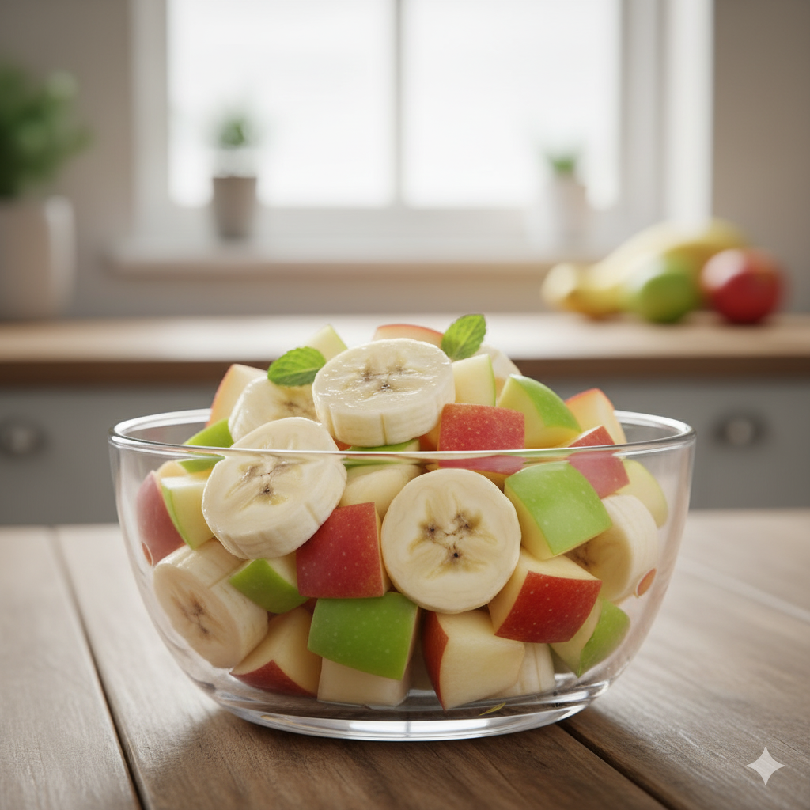
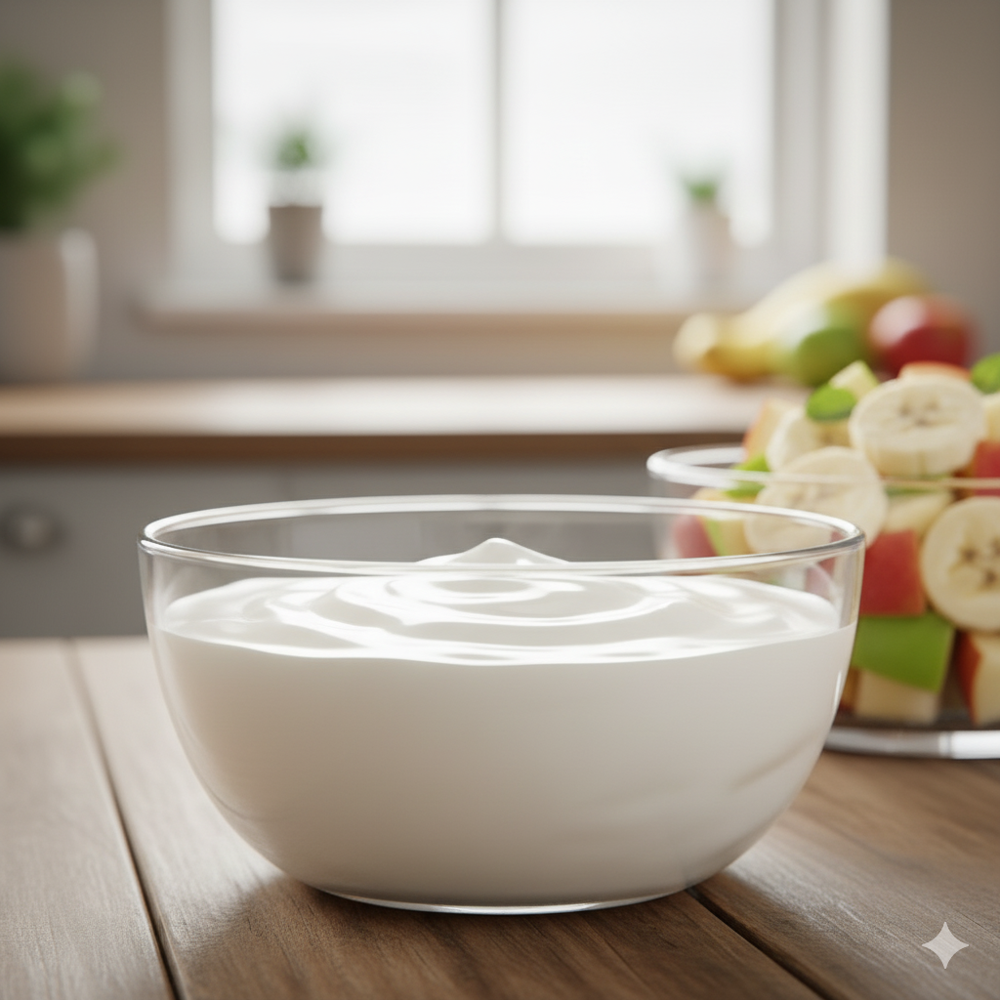
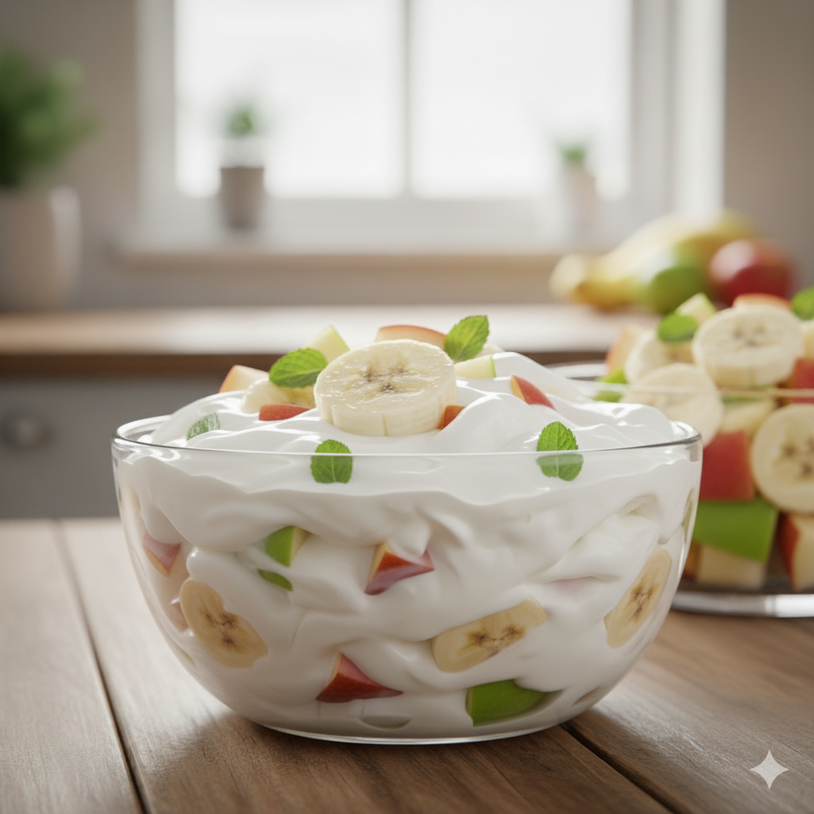
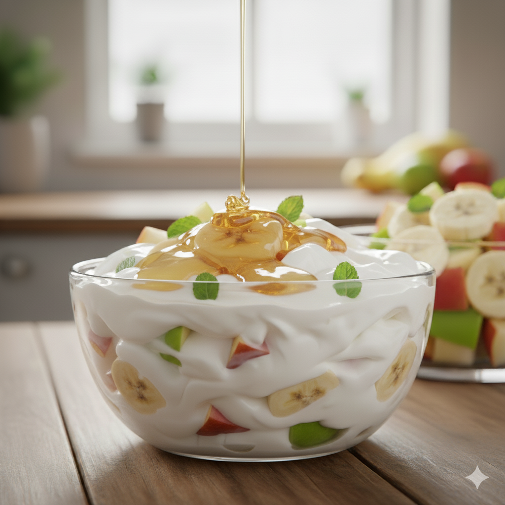

Postre: Yogur con frutas y miel
Ingredientes
- 1 yogur natural o griego sin azúcar
- 1/2 plátano
- 1/2 manzana
- Un puñado de frutos rojos (fresas, moras, arándanos...)
- 1 cucharadita de miel
- Unas hojas de menta (opcional)
Pasos
- Cortar 1/2 manzana y 1/2 plátano en trozos pequeños.

- Colocar el yogur en un bol o vaso bonito.

- Añadir por encima la fruta cortada y los frutos rojos.

- Verter 1 cucharadita de miel y decorar con menta si se desea.

Resultado final
Un postre fresco, ligero y muy saludable: yogur con frutas y miel, ideal para cerrar un menú equilibrado.